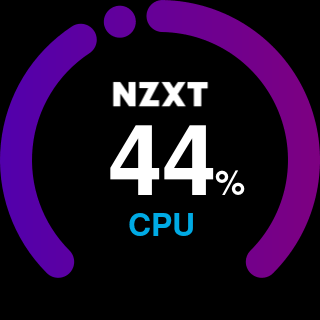
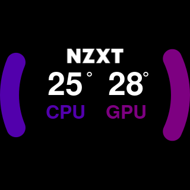
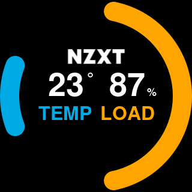

nz3xt
Python script for creating gauges and patterns suitable for nzxt z3 pumheads
Usage:
nz3xt single <primary_color> <secondary_color> <text_color> <name> <value> <unit> <filename>
nz3xt double <primary_color> <secondary_color> <primary_name> <primary_value> <primary_unit> <secondary_name> <secondary_value> <secondary_unit> <filename>
nz3xt taichi <primary_color> <secondary_color> <duration> <filename>
nz3xt sweep <primary_color> <duration> <filename>
nz3xt rainbow <duration> <filename>
nz3xt spectrum <duration> <filename>
nz3xt colorwheel <primary_color> <secondary_color> <quaternary_color> <quinary_color> <duration> <filename>
Examples




./nz3xt single "#5200ac" "#7d0081" "#ffffff" CPU 39 ° examples/single01.gif
./nz3xt single "#5200ac" "#7d0081" "#00aae4" CPU 44 % examples/single02.gif
./nz3xt double "#5200ac" "#7d0081" CPU 25 ° GPU 28 ° examples/double01.gif
./nz3xt double "#00aae4" "#ffa500" TEMP 23 ° LOAD 87 % examples/double02.gif
./nz3xt taichi "#00aae4" "#ffa500" 0.05 examples/taichi01.gif
./nz3xt sweep "#00aae4" 0.05 examples/sweep01.gif
./nz3xt rainbow 0.05 examples/rainbow01.gif
./nz3xt spectrum 0.05 examples/spectrum01.gif
./nz3xt colorwheel "#00aae4" "#ffa500" "#5200ac" "#7d0081" 0.05 examples/colorwheel01.gif